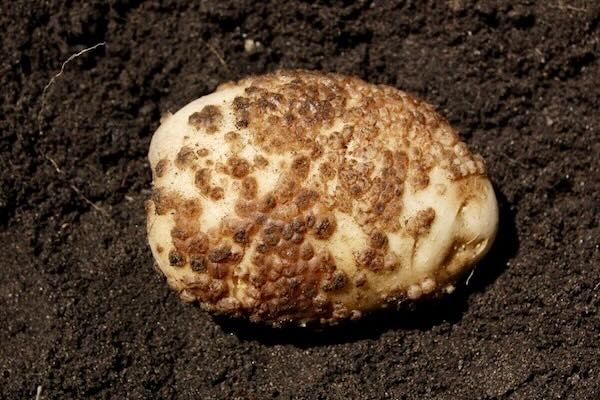
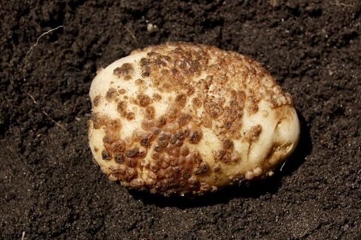

Gombás betegségek
 Burgonyavész (Phytophthora infestans)
Burgonyavész (Phytophthora infestans)
 Fuzáriumos gumórothadás (Fusarium spp.)

Spongospórás varasodás (Spongospora subterranea)
Fuzáriumos gumórothadás (Fusarium spp.)

Spongospórás varasodás (Spongospora subterranea)
Baktériumos betegségek
 Sugárgombás varasodás
Sugárgombás varasodás
Nematódák által okozott betegségek
Élettani rendellenességek
Egyéb kártevők által okozott károk